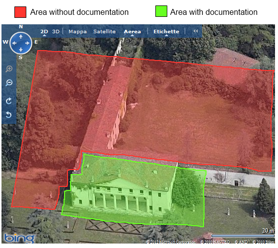

Introduction
Villa Valmarana (also known as Valmarana Scagnolari Zen) is a Renaissance villa in the province of Vicenza. It is one of the many villas designed by Andrea Palladio and described in his famous book collection "I Quattro Libri dell'Architettura" (The Four Books of Architecture) published in 1570.

The villa, as of today, is quite different from the one that Palladio designed for Gianfrancesco Valmarana, around 1563: as can be seen from the image (on the right) it shows a structure with double-storey loggias, enclosed by small towers on both fronts. The project, as intended, was never completed because the build works were interrupted in 1566 by the death of Gianfrancesco and were probably concluded by his nephew Leonardo (the heir of the family) probably using less funds. The second storey of loggias was never constructed and the middle section was terminated with some sort of attic.
Unfortunately the villa was almost destroyed by bombardment during World War II and then recently reconstructed with some modifications.
The villa, after the latest reconstruction, is quite different from what Palladio had in mind: while the ground floor is mostly the same in respect of the original project, the top (and last floor) is totally different. In addition some extra structure (that is partially in ruins) has been added on the back of the villa (a wing facing north) and a wall divides the front area, with the garden, from the back one that is inaccessible to the public.
General description of the project
Reproducing the villa in 3D, whatever as of today or as of the original project, is quite impossible: lack of documentation makes improbable the definition of a coherent structure to implement and show. The original project, in fact, consist of only two projections (front and basement) and of the today structure there is an abundance of photo shoots of the front area of the villa (that is accessible by the public) but none of the other parts (that are inaccessible to the public).
The first step was to gather all the possible documentation to make an informed decision on how to develop the whole project: after gathering a plethora of images I decided to build a hybrid between the original Palladio project and the villa as it is today. It was decided to proceed as follow:
- gather the finest documentation on the front section of the villa (the south entrance in the aerial photo) and one of the two sides (the east one);
- use the original Palladio project to design the missing sides (using as basis the villa as of today);
- remove the post War World II additions (the garden wall and the partially demolished north wing).
Hierarchical decomposition
The hierarchical decomposition of the villa was done with a top-down approach.
Using the approach wrote in the above section the villa was divided in 3 main parts:
Besides the decomposition, to found a viable scale usage of aerial images was employed.
Facade
 The facade, typical of the villas designed by Palladio, is the most complex part of the whole villa. As seen in the images on the right, the villa's facade can be decomposed into a lot of elements: some can be considered macro elements and thus composed by other elements that can be reused (completely or partially) inside other macro elements of the facade itself or of the villa.
The facade, typical of the villas designed by Palladio, is the most complex part of the whole villa. As seen in the images on the right, the villa's facade can be decomposed into a lot of elements: some can be considered macro elements and thus composed by other elements that can be reused (completely or partially) inside other macro elements of the facade itself or of the villa.
The 3 macro elements in which the facade can be decomposed are:
Patio


The patio is the entrance of the villa (in the original project it was replicated in the north side too) and it is composed by a platform on which 6 columns are placed at evenly spaced position. Inside the patio there is the main door with 2 barred windows (diagonal bars) on each side of the main door. The side walls closing the patio on the right and on the left, contains a door (like the main one but tinier).
The columns are inspired from the ionic order style without the well known 24 flutes: a stylobate separate the column from the basement then we have a base, the column itself and a capital.
Over the columns we have a typical ionic architrave that represent the separation between the ground floor and the first floor: the windows that are directly over the patio are uniquely styled with a tiny balcony made by fancy square-ish balusters.
Pediment

A pediment is a classical architectural element consisting of the triangular section found above the horizontal structure (entablature), typically supported by columns. The gable end of the pediment is surrounded by the cornice moulding. The tympanum, or triangular area within the pediment, was often decorated with sculptures and reliefs demonstrating scenes of Greek and Roman mythology or allegorical figures.
Like for the columns, a ionic style, was chosen for the pediment and although in the original project the tympanum was going to be decorated with a bas-relief in the end it was removed in the final construction.
The decomposition of this element follows strictly the classical description of it by having a cornice moulding replicated 3 times with different lenghts to form a triangle that surrounds an area called tympanum.
Facade side walls
The walls on the left (and on the right) of the facade are symmetrical and their style is similar to the walls that are part of the patio: big windows with a cornice around them and vertical bars on the ground floor (like in the patio windows).
The wall just next of the patio are positioned a little behind in respect of the main line of the facade itself probably to give separation between the complex structure of the patio and the other walls (probably because of the original project that designed the right-most walls to contain arches in the ground floor).
The right-most (or left-most) part of the side walls are the beginning of an half square structure (like a turret) that ends on the side walls of the villa.
Side Wall
There is really a lack of good photos (and generically documentation) about the side walls. They're the natural continuation of the patio left-most / right-most turrets with then a wall with 4 windows (more or less). The windows in the wall follows the style of the facade walls with possibly minor differences (but is not sure).
Since a full frontal photo without dark areas of the side wall, the original project was used as reference to complete the structure.
Roof
The roof is the part that is not compliant with the original Palladio's project at all: the structure, not being symmetrical at all, loses its double pediment (with the typical pediment roof), the statues are in a different position, two other chimneys (besides the original ones)were added on the left side of the villa and a skylight / side window was added at the left of the pediment roof.
Using the general idea proposed at the beginning of the document, the extra chimneys where removed along with the skylight and even the statues on the pediment roof were not included in the project.
Implementation
 Implementation of the project try to follow best practices of both Javascript and Plasm language: a functional approach where possible, reusing of components and modularized code that tries to be easily understandable. Every real world object has a counterpart in the code, this helped the re-usability and many optimizations (controlled by global switches) were implemented to permit the display of the model with different level of complexity and to help during the development phases.
Implementation of the project try to follow best practices of both Javascript and Plasm language: a functional approach where possible, reusing of components and modularized code that tries to be easily understandable. Every real world object has a counterpart in the code, this helped the re-usability and many optimizations (controlled by global switches) were implemented to permit the display of the model with different level of complexity and to help during the development phases.
Generic helpful objects
Besides representation of real objects, inside the project there are 3 "classes" containing useful functions:
- PointUtils
containing roto-translation functions working with array of points (example below)PointUtils.ruotaPunti = function(pointList, angolo, asse) { if (asse === 0) { var alfa = angolo; return pointList.map( function(pt) { return [ pt[0], pt[1]*COS(alfa) + (-1)*pt[2]*SIN(alfa), pt[1]*SIN(alfa) + pt[2]*COS(alfa) ]; }); } else if (asse === 1) { var beta = angolo; return pointList.map( function(pt) { return [ pt[0]*COS(beta) + pt[2]*SIN(beta), pt[1], (-1)*pt[0]*SIN(beta) + pt[2]*COS(beta) ]; }); } else if (asse === 2) { var gamma = angolo; return pointList.map( function(pt) { return [ pt[0]*COS(gamma) + (-1)*pt[1]*SIN(gamma), pt[0]*SIN(gamma) + pt[1]*COS(gamma), pt[2] ]; }); } return pointList; }; - CurveUtils
containing functions to draw all curve types (example below)CurveUtils.drawCurveDebug = function(mapping, controlPoints) { // punti di controllo var listaDfacce = []; controlPoints.forEach( function(v,i) { listaDfacce.push([i]); } ); DRAW( COLOR([0.1,0.6,0.2])( SIMPLICIAL_COMPLEX(controlPoints)(listaDfacce) ) ); // curva var curve = MAP(mapping)(CommonDomains.DIM1_DOMAIN); DRAW( COLOR([0,0.5,0.5])( curve ) ); }; CurveUtils.createS0NUBS = function(degree, cPoints, debug) { debug = debug || false; var nubMap = NUBS(S0)(degree)(CurveUtils.generateS0Knots(cPoints.length, degree))(cPoints); if ( debug == true ) { CurveUtils.drawCurveDebug(nubMap, cPoints); } return nubMap; }; - CommonDomains
containing singleton domains reused in the whole projectif (PROJECT_HIGHRESOLUTION == false) { CommonDomains.DIM1_DOMAIN = INTERVALS(1)(35); CommonDomains.DIM2_DOMAIN = DOMAIN([[0,1],[0,1]])([35,1]); CommonDomains.DIM2_DOMAIN_LOWRES = DOMAIN([[0,1],[0,1]])([15,1]); CommonDomains.DIM2RP_DOMAIN = DOMAIN([[0,1],[0,1]])([20,15]); CommonDomains.DIM2R_DOMAIN = DOMAIN([[0,1],[0,2*PI]])([1,20]); // ...
Column
The column was implemented following the decomposition using cuboid for the base, various nubs curve profiles for the column and a more complex combination for the capital.
Capital
Although a ionic capital spiral is inspired by a nautilus shell and thus created using logarithmic equations, I decide to use the Archimedes's spiral that wield much more better looking results. An Archimedean spiral is defined, in polar coordinates (r,θ), by the equation r = a + bθ, with real numbers "a" and "b": changing the parameter "a" will turn the spiral, while "b" controls the distance between successive turnings . It can be easily converted in a javascript snippet to generate control points for a nubs curve profile:Colonna.prototype.curvaCapitello_Controls = function(raggioMax) {
raggioMax = raggioMax || 1;
var controlPoints = [];
var i = 0;
var angolo = PI/2;
for (i = 0; i < 13; i++) {
controlPoints.push( [raggioMax * ( COS(i*angolo) + i*SIN(i*angolo) ), raggioMax * ( SIN(i*angolo) - i*COS(i*angolo) ), 0] );
}
return controlPoints;
};
The double spiral has been created using two concentric nubs and then using cylindrical_surface, some simplicial_complex instructions were then used to close the empty spaces left.
var profonditaCapitelloSolidoExt = CYLINDRICAL_SURFACE(curvaExt)([0,0,zCapitello]);
var profonditaCapitelloSolidoInt = CYLINDRICAL_SURFACE(curvaInt)([0,0,zCapitello]);
// Tappo a cylindrical surface
var chiusuraSpirali = this.creaCapitello_TappoSpiraliLowRes(zCapitello, scalaSpiraleGrossa, scalaSpiralePiccola);
// Genera il tutto
profonditaCapitelloSolido = STRUCT([ MAP( profonditaCapitelloSolidoExt )( CommonDomains.DIM2_DOMAIN ),
MAP( profonditaCapitelloSolidoInt )( CommonDomains.DIM2_DOMAIN ),
chiusuraSpirali
]);
Patio
The patio was implemented by having a origin-centered struct composed of 6 columns, a series of walls generated by a parametric function mainly composed of a simplex_grid creating the wall itself and a call to a function that is able to generate a window or a door (an example below).
ModuliPareti.prototype.creaFinestraGrossa = function(frameInternoH, frameInternoV, conInferriata) {
conInferriata = conInferriata || false;
//
var spessoreParete = this.spessoreParete;
var spessoreBordo = this.spessoreBordo;
var larghezzaParete = this.larghezzaParete;
var altezzaParete = this.altezzaParete;
//
var spessBandaH = 0.3;
var spessBandaV = spessBandaH;
var spessVetro = spessBandaH/3;
//
var sbarraVerticale = COLOR(ColoriProgetto.INFISSO_FINESTRA)(
SIMPLEX_GRID([[spessBandaV],[spessoreBordo],[(2/3)*frameInternoV]])
);
var sbarraOrizzontale = COLOR(ColoriProgetto.INFISSO_FINESTRA)(
SIMPLEX_GRID([[frameInternoH],[spessoreBordo],[spessBandaH]])
);
var vetro = COLOR(ColoriProgetto.VETRO)(
BOUNDARY(
SIMPLEX_GRID([[frameInternoH],[spessVetro],[frameInternoV]])
)
);
var bandeLaterali = COLOR(ColoriProgetto.INFISSO_FINESTRA)(
SIMPLEX_GRID([[spessBandaV],[spessBandaV],[frameInternoV]])
);
var finModel = [];
finModel.push(T([1])([spessVetro])(vetro));
finModel.push(bandeLaterali);
finModel.push(T([0])([(frameInternoH-spessBandaV)])(bandeLaterali));
finModel.push(T([0])([(frameInternoH-spessBandaV)/2])(sbarraVerticale));
finModel.push(T([0])([spessBandaV])(sbarraOrizzontale));
finModel.push(T([0,2])([spessBandaV,frameInternoV-spessBandaH])(sbarraOrizzontale));
finModel.push(T([0,2])([spessBandaV,(2/3)*frameInternoV])(sbarraOrizzontale));
if ( conInferriata == true ) {
finModel.push(T([1])([-(spessBandaV/2)])(this.creaFinestra_InferriataDiagonale(frameInternoH, frameInternoV)));
}
return STRUCT(finModel);
};
Ionic architrave
The ionic architrave was implemented by using a first degree nubs profile in combination with cylindrical_surface; while the right and left angle were implemented by cloning, scaling and roto-translating the generating profile and combining two of them by using a s1 nubs surface.CornicionePatio.prototype.creaCornicioneAngolo = function() {
var ctPoints = this.getControlPoints();
// Metti punti in XZ
ctPoints = PointUtils.ruotaPunti(ctPoints, PI/2, 0);
var prof1 = CurveUtils.createS0NUBS(1, ctPoints);
// Profilo ruotato
var ctPointsRR = PointUtils.scalaPuntiAsse(this.getControlPoints(), SQRT(2), 0);
ctPointsRR = PointUtils.ruotaPunti(ctPointsRR, PI/2, 0);
ctPointsRR = PointUtils.ruotaPunti(ctPointsRR, PI/4, 2);
var prof2 = CurveUtils.createS0NUBS(1, ctPointsRR);
// Superficie
var mapProfileCornicione = NUBS(S1)(1)([0,0,3,3])([prof1,prof2]);
return MAP(mapProfileCornicione)(CommonDomains.DIM2_DOMAIN_LOWRES);
};
Balcony and balusters
The first floor right above the patio is made by six windows with an unique balcony formed by square-ish balusters: while the generation of the walls containing the windows used the same parametrized function used for the patio walls, the balusters creation and displacement required a custom function similar to the window one. Every single baluster is essentially a profileprod_surface between two first degree nubs profiles where the profiles control point can be scaled at will to generate a baluster with the right width and height.ColonnaBalconcino.prototype.creaColonna = function(scaleFactorV, scaleFactorH) {
scaleFactorV = scaleFactorV || 1;
scaleFactorH = scaleFactorH || 1;
// Punti controllo NUBS colonna
var ctPoints = this.getColumnPoints();
// Scala se necessario
if ( scaleFactorV != 1 ) {
ctPoints = PointUtils.scalaPunti(ctPoints, scaleFactorV);
}
// Metti punti in XZ
ctPoints = PointUtils.ruotaPunti(ctPoints, PI/2, 0);
var prof1 = CurveUtils.createS0NUBS(1, ctPoints, false);
// Quadrato scala in XY
var ctPointsQuadrato = [ [1,1,0],[1,1,0],[-1,1,0],[-1,-1,0],[1,-1,0],[1,1,0],[1,1,0] ];
ctPointsQuadrato = PointUtils.scalaPunti(ctPointsQuadrato, this.fattoreScalaBase * scaleFactorH);
var prof2 = NUBS(S1)(1)(CurveUtils.generateS0Knots(ctPointsQuadrato.length, 1))(ctPointsQuadrato);
// Produttoria tra profili
var mapProfileColonna = PROFILEPROD_SURFACE([prof1,prof2]);
return MAP(mapProfileColonna)(CommonDomains.DIM2RP_DOMAIN);
};
Pediment
The pediment creation object is a parametric one that, getting as input the lenght of each sides of the triangle and its height, is able to generate, using basic trigonometry, a full structure.
The 3 cornices surrounding the tympanum (that is a triangular simplicial_complex) are generated with the same procedure employed in the architrave object: a first degree nubs profile in combination with cylindrical_surface; the gutta in the diagonal cornices are generated parametrically by a function (they're cubic although in the architrave of the Doric order they're cone-shaped projection used for water-repelling).
The connection between the two diagonal cornices is made using the usual cloning, scaling and roto-translation of the profiles into the creation of a nubs surface.
TimpanoFacciata.prototype.creaCornicioneAngolato = function(lengthCorn, angoloGradi) {
angoloGradi = angoloGradi || this.angoloDefault;
//
var ctPoints = this.getCPointsSotto();
//
var angoloRadianti = angoloGradi * PI / 180;
var componenteY = lengthCorn*COS(angoloRadianti);
var componenteZ = lengthCorn*SIN(angoloRadianti);
// Metti punti in XZ
ctPoints = PointUtils.ruotaPunti(ctPoints, PI/2, 0);
ctPoints = PointUtils.ruotaPunti(ctPoints, angoloRadianti, 0);
ctPoints = PointUtils.traslaPunti(ctPoints, 1, (this.hMaxPointsSotto-1.5)*SIN(angoloRadianti));
var prof1 = CurveUtils.createS0NUBS(1, ctPoints);
// CYLINDRICAL_SURFACE
var mapProfileCornicione = CYLINDRICAL_SURFACE(prof1)([0,componenteY,componenteZ]);
// Tappi laterali
var tappiLaterali = [];
tappiLaterali.push( this.creaTappoLaterale(ctPoints) );
var finalModel = STRUCT([
R([1,2])(angoloRadianti)( this.creaFregio(lengthCorn, 2, -1) ),
STRUCT( CONS( AA(MAP)(tappiLaterali) )( CommonDomains.DIM2_DOMAIN_LOWRES ) ),
MAP(mapProfileCornicione)(CommonDomains.DIM2_DOMAIN_LOWRES)
]);
return COLOR( ColoriProgetto.INTONACO_BORDI )( finalModel );
};
Walls
All the walls are generated using an object that takes width as parameter and then displaced in a struct that is usually symmetrical in respect of some axes so with the usage of a rotation or a scaling the rest of a bigger wall or of the villa itself is generated easily (because of its symmetrical properties in the original design) (some examples below).
ModuliPareti.prototype.pareteAltaFinestraGrossa = function() {
var spessoreParete = this.spessoreParete;
var spessoreBordo = this.spessoreBordo;
var larghezzaParete = this.larghezzaParete;
var altezzaParete = this.altezzaParete;
//
var deltaBordo = this.deltaBordo;
//
var frameInternoH = 5;
var frameInternoV = 10;
var frameEsternoH = 7 - deltaBordo;
var frameEsternoV = 12 - deltaBordo;
var frameInternoHB = 6.5;
var frameInternoVB = 13.5;
var frameEsternoHB = 8.5 - deltaBordo;
var frameEsternoVB = 15.5 - deltaBordo;
var frameEsternoTV1 = 3 + deltaBordo;
var frameEsternoTV2 = 37.5 + deltaBordo;
//
var bordoH = this.bordoH;
var bordoV = this.bordoV;
//
var modelloParete = COLOR(ColoriProgetto.INTONACO_BASE)(
STRUCT([
// Grosso
SIMPLEX_GRID( [[(larghezzaParete-frameInternoHB)/2,-frameInternoHB,(larghezzaParete-frameInternoHB)/2],[spessoreParete],[frameEsternoTV2]] ),
SIMPLEX_GRID( [[-((larghezzaParete-frameInternoHB)/2),frameInternoHB,-((larghezzaParete-frameInternoHB)/2)],[spessoreParete],
[frameEsternoTV1+bordoV,-frameInternoVB,frameEsternoTV2-frameEsternoTV1-frameInternoVB]] ) ,
// Piccolo
SIMPLEX_GRID( [[(larghezzaParete-frameInternoH)/2,-frameInternoH,(larghezzaParete-frameInternoH)/2],[spessoreParete],[-frameEsternoTV2, altezzaParete-frameEsternoTV2]] ),
SIMPLEX_GRID( [[-((larghezzaParete-frameInternoH)/2),frameInternoH,-((larghezzaParete-frameInternoH)/2)],[spessoreParete],
[-frameEsternoTV2,bordoV,-frameInternoV,altezzaParete-frameInternoV-frameEsternoTV2-bordoV]] )
])
);
var bordoFinestra = COLOR(ColoriProgetto.INTONACO_BORDI)(
STRUCT([
// Grosso
SIMPLEX_GRID( [[-((larghezzaParete-frameInternoHB-(bordoH*2))/2),bordoH,-frameInternoHB,bordoH,-((larghezzaParete-frameInternoHB-(bordoH*2))/2)],[spessoreBordo],[-frameEsternoTV1,frameEsternoVB+bordoV]] ),
SIMPLEX_GRID( [[-((larghezzaParete-frameInternoHB)/2),frameInternoHB,-((larghezzaParete-frameInternoHB)/2)],[spessoreBordo],[-frameEsternoTV1,bordoV,-frameInternoVB,bordoV]] ),
// Piccolo
SIMPLEX_GRID( [[-((larghezzaParete-frameInternoH-(bordoH*2))/2),bordoH,-frameInternoH,bordoH,-((larghezzaParete-frameInternoH-(bordoH*2))/2)],[spessoreBordo],[-frameEsternoTV2,frameEsternoV+bordoV,-(altezzaParete-frameEsternoTV2-frameEsternoV-bordoV)]] ),
SIMPLEX_GRID( [[-((larghezzaParete-frameInternoH)/2),frameInternoH,-((larghezzaParete-frameInternoH)/2)],[spessoreBordo],[-frameEsternoTV2,bordoV,-frameInternoV,bordoV,-(altezzaParete-frameEsternoTV2-(bordoV*2)-frameInternoV)]] )
])
);
var posCornicioneAlto = frameEsternoTV2 + frameEsternoV + bordoV + 3*deltaBordo - this.deltaCornicione;
var cornicioni = this.getCornicioni(larghezzaParete, posCornicioneAlto);
var posBordoFinestra = T([1])([-spessoreBordo])(bordoFinestra);
var finestraVetriInf = T([0,1,2])([(larghezzaParete-frameInternoHB)/2,spessoreParete/2,frameEsternoTV1+bordoV])( this.creaFinestraGrossa(frameInternoHB, frameInternoVB, true) );
var finestraVetriSup = T([0,1,2])([(larghezzaParete-frameInternoH)/2,spessoreParete/2,frameEsternoTV1+bordoV])( this.creaFinestraPiccola(frameInternoH, frameInternoV) );
// finalModel
var finalModel = [];
finalModel.push( modelloParete );
finalModel.push( cornicioni );
finalModel.push( posBordoFinestra );
finalModel.push( finestraVetriInf );
finalModel.push( T([2])([frameEsternoTV2-frameEsternoTV1]) );
finalModel.push( finestraVetriSup );
return STRUCT(finalModel);
};
FacciataLaterale.prototype.creaFacciataDestra = function() {
var larghezzaPareteFrontale = CommonParetiMeasure.torretta.pareteSenzaFinestra;
var profonditaLaterale = CommonParetiMeasure.torretta.profonditaLaterale;
var allineamentoPatio = 1;
//
var pareteLateraleRModel = [];
pareteLateraleRModel.push( this.refPareti.pareteAlta(larghezzaPareteFrontale) );
pareteLateraleRModel.push( T([0])([larghezzaPareteFrontale]) );
this.halfLength += larghezzaPareteFrontale;
pareteLateraleRModel.push( this.refPareti.pareteAltaFinestraGrossa() );
pareteLateraleRModel.push( T([0])([this.refPareti.larghezzaParete]) );
this.halfLength += this.refPareti.larghezzaParete;
pareteLateraleRModel.push( this.refPareti.pareteAlta(larghezzaPareteFrontale) );
pareteLateraleRModel.push( T([0])([larghezzaPareteFrontale]) );
this.halfLength += larghezzaPareteFrontale;
pareteLateraleRModel.push( R([0,1])(-PI/2)( this.refPareti.pareteAlta(profonditaLaterale) ) );
pareteLateraleRModel.push( T([1])([-profonditaLaterale]) );
pareteLateraleRModel.push( T([0])([-this.refPareti.spessoreBordo])( this.refPareti.getCornicioneCubico() ) );
pareteLateraleRModel.push( this.refPareti.getCornicioni(this.refPareti.spessoreParete) );
pareteLateraleRModel.push( T([0])([this.refPareti.spessoreParete]) );
this.halfLength += this.refPareti.spessoreParete;
pareteLateraleRModel.push( this.refPareti.pareteAlta(larghezzaPareteFrontale+allineamentoPatio) );
pareteLateraleRModel.push( T([0])([larghezzaPareteFrontale+allineamentoPatio]) );
this.halfLength += larghezzaPareteFrontale+allineamentoPatio;
pareteLateraleRModel.push( this.refPareti.pareteAltaFinestraPiccola() );
pareteLateraleRModel.push( T([0])([this.refPareti.larghezzaParete]) );
this.halfLength += this.refPareti.larghezzaParete;
pareteLateraleRModel.push( this.refPareti.pareteAlta(larghezzaPareteFrontale+allineamentoPatio) );
pareteLateraleRModel.push( T([0])([larghezzaPareteFrontale+allineamentoPatio]) );
pareteLateraleRModel.push( T([0])([ CommonParetiMeasure.spessoreBordo ]) );
this.halfLength += larghezzaPareteFrontale+allineamentoPatio; // + CommonParetiMeasure.spessoreBordo;
if ( PROJECT_DEBUGWALLCONNECTION == true ) {
pareteLateraleRModel.push( COLOR(ColoriProgetto.DEBUG)( S([0])([-1])( this.refPareti.getCornicioneCubico() ) ) );
} else {
pareteLateraleRModel.push( S([0])([-1])( this.refPareti.getCornicioneCubico() ) );
}
return STRUCT(pareteLateraleRModel);
};
FacciataLaterale.prototype.creaFacciata = function() {
var finalModel = [];
var pareteLateraleR = this.creaFacciataDestra();
var pareteLateraleL = S([0])([-1])( pareteLateraleR );
finalModel.push( pareteLateraleR );
finalModel.push( pareteLateraleL );
return STRUCT(finalModel);
};
Roof
Due to the symmetry, only half of the roof was designed using trigonometry and various simplical_complex. The only extra object that was designed separately was the chimney that is placed into the half roof designed so it can be easily replicated.
Roof.prototype.creaFullTetto = function(halfX, halfY, halfPatioX, altezzaTetto, altezzaTimpano) {
altezzaTimpano = altezzaTimpano || altezzaTetto;
var finalModel = [];
var halfTetto = this.creaHalfTetto(halfX, halfY, halfPatioX, altezzaTetto, altezzaTimpano);
finalModel.push( halfTetto );
finalModel.push( S([0])([-1])( halfTetto ) );
if ( PROJECT_NOFUNCTIONALTRS == true ) {
finalModel = STRUCT(finalModel).translate([1],[-halfY]);
} else {
finalModel = T([1])([-halfY])( STRUCT(finalModel) );
}
return finalModel;
};
Final assembly
Since every object was designed to be hierarchically called from its "father", the final assembly is essentially calling the drawing method of the big 3 objects identified in the hierarchical decomposition section.
Progetto.prototype.disegnaModello = function() {
var finalModel = [];
finalModel.push( this.fullWalls() );
if ( PROJECT_NOPLATFORM != true ) {
finalModel.push( this.creaPiattaforme() )
}
if (PROJECT_NOROOF != true) {
finalModel.push( this.fullRoof() );
}
return STRUCT(finalModel);
};
Centering the camera
The project, drawn as is, is quite big, so to show it immediately after rendering a modification of the P.O.V. is needed: it can be easily done by getting the bounding box of the rendered scene and then by placing the camera using a coordinate vector using the bounding box as scale factor.This procedure is called on document ready, that happens just after the final rendering.
var centerProject = function() {
// p is the Plasm global viewer
var cameraControls = p.controls.controls;
var boundingRadius = p.scene.getBoundingRadius();
cameraControls.placeCamera(new THREE.Vector3(1.1*boundingRadius, -1.1*boundingRadius, 0.2*boundingRadius),
new THREE.Vector3(), new THREE.Vector3(0,0,1));
};
// Center project on document ready
$(function () {
centerProject();
});
Conclusion
Doing the project was indeed fun and gave me the possibility to review old knowledge and learn new things about computational graphic. The usage of javascript and a web browser as development-tools made also easier working on every machine in an overall extremely stable environment. Writing documentation, as always, is a painful and very long, but at least made me review the whole project before delivery to check for mistakes.
I would like, also, to thank the teacher and the two assistants for the help received during the development of the project, it was really helpful.
Below there are some screenshots of the finished model and of the development phases.
Project screenshots
Author sketches and notes
Below there is a collection of hand-written notes and sketches made during the various phases of the project.


{kind=link}
{kind=link}
{kind=link}
{kind=link}
{kind=link}
{kind=link}
{kind=link}
{kind=link}
{kind=link}
{kind=link}
{kind=link}
{kind=link}
{kind=link}
{kind=link}
{kind=link}
{kind=link}
{kind=link}
{kind=link}
{kind=link}
{kind=link}